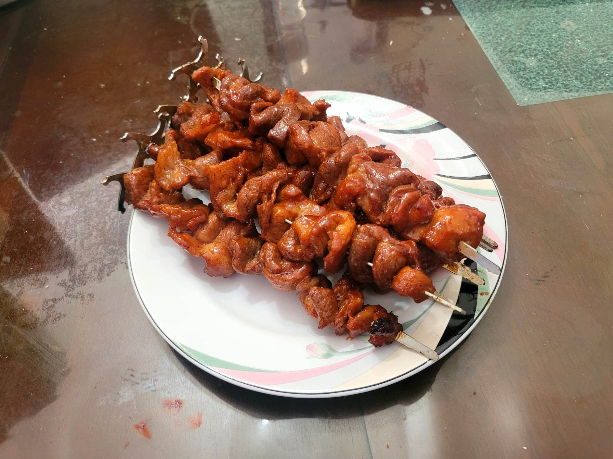

Filipino Barbecue

Ingredients:
Marinade:
- 4 lb Pork shoulder, sliced into thin pieces
- 3/4 cup Soy sauce
- 3/4 cup Banana ketchup
- 1/2 cup Calamansi or Lemon juice
- 1/4 cup Dark brown sugar
- 2 tbsp Garlic powder
- 2 tsp Salt
- 1 tsp Black pepper
- 1 1/2 cup Sprite or any Lemon lime soda
Basting Sauce:
- 3/4 cup Soy sauce
- 3/4 cup Banana ketchup
- 1/2 cup Calamansi or Lemon juice
- 1/4 cup Dark brown sugar
- 2 tbsp Garlic powder
- 2 tsp Salt
- 1 tsp Black pepper
Instructions:
- Combine all the marinade ingredients and let marinade overnight.
- Heat up a grill. Combine the marinade ingredients together. Place the marinated meat onto skewers.
- Grill the skewers for about 3-5 minutes per side or until completely cooked. Baste each skewer when flipping. Serve immediately with some spicy vinegar.